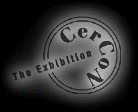

Statement

Susan Kneebone
Education
- 1995
Bachelor of Fine Arts, Victorian College of the Arts, Melbourne, Australia
Studio major - Ceramics.
- 1995
Bachelor of Fine Arts, Victorian College of the Arts, Melbourne, Australia
Studio major - Ceramics.
1990-92
Art & Design Subjects: Prahran TAFE, Moorabbin TAFE
Life & General Drawing, Ceramics, Painting, Art History, Illustration, Graphic and
Computer Design.
Awards
- 1995: 19th Walker Ceramic Award - First Prize
- 1995: Harry Curtis Prize, (VCA)
- 1995: Harry Curtis Prize, (VCA)
- 1991: Awards in General & Life Drawing, VisualArt, (TAFE).
Exhibitions
- 1996: Epoch, Group Exhibition,Yume Ya Gallery, Collingwood (March 3-17)
- 1995: Fresh! Craft Victoria Student Award Exhibition, 101 Collins Street.
19th Annual Walker Ceramic Award, Westpac Gallery
Personal Space, group show @ VCA Art Gallery
VCA @ the Malthouse, Ceramics & Drawing.
- 1994: Crack the Egg, Women from the VCA Group show, Access Studio
VCA Ceramics Group Show @ Fringe Studio, St. Kilda.
Collections
- Walker Ceramics
- Private Collections
Other Qualifications, Employment, Experiences
- 1996
Travelled for 6 months extensively through Europe including 3 months working at Rigalto
Artists' Studios in Umbria, Italy.
- 1995
VCA Student Union Art School Representative. As a member on the Executive Committee
I participated in new initiatives and decisions for this fairly new student union which
actively encourages and supports student organised culturalactivities. My role included
organising the first VCA Student Union Art Acquisition Prize. This event is an incentive for
professional curators from outside the VCA to participate in adjudicating and considering
students' works.
1991-1995
Copernicus Publications - Self employed in Desktop Publishing
- 1988-1992
Health Solutions Pty Ltd -Management Consultants to the Health Service
Industry. Research/Administration Officer.
- 1987: Graduate Diploma Business Administration, University of South Australia
- 1986:
Bachelor of Science, Flinders and Adelaide University.
- 1982- Current:
Ongoing casual employment in administration and desk top publishing.